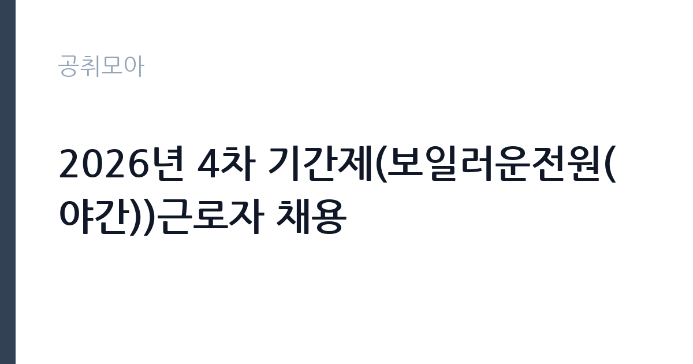

[공공기관] 2026년 4차 기간제(보일러운전원(야간))근로자 채용
재단법인 건설기술교육원 · 인천 · 마감 2026-10-17 (D-15) · 출처 잡알리오

한눈에 보는 모집 조건
| 기관 | 재단법인 건설기술교육원 |
|---|---|
| 공고명 | 2026년 4차 기간제(보일러운전원(야간))근로자 채용 |
| 고용형태 | 공무직 |
| 근무지 | 인천 |
| 게시일 | 2026-10-03 |
| 마감일 | 2026-10-17 (D-15) |
지원자격, 이렇게 읽으세요
- 공공기관 채용공시
- 세부 조건은 원문 공고문 확인
지원자격의 핵심은 자격증 두 가지입니다. 에너지관리기능사 이상의 국가기술자격을 반드시 보유해야 하고, 여기에 가스사용시설안전관리자 양성교육 이수나 가스용보일러관리자 교육 이수, 가스기능사 중 하나 이상을 추가로 갖추어야 합니다. 두 조건을 모두 만족해야 지원이 가능합니다. 성별과 학력, 연령과 거주지에는 제한이 없으며, 교육원 근무상한연령인 만 65세 이하인 분까지 지원하실 수 있습니다. 자격증이 있어도 유효기간과 교육 이수증 발급 여부를 미리 확인하시기 바랍니다. 가스 관련 교육 이수증은 발급 기관에 따라 재발급에 시간이 걸리므로 접수 마감 전에 준비하셔야 합니다.
이 공고의 포인트
이 공고의 가장 큰 매력은 낮은 지원 문턱과 분명한 직무 범위입니다. 야간 보일러 운전이라는 업무가 명확해 본인의 자격과 경력에 맞는지 판단하기 쉽습니다. 건설기술교육원은 국토교통부 산하 재단법인으로 건설기술인의 교육훈련을 전담하는 기관이며, 인천 본원에서 근무하게 됩니다. 교육시설의 보일러와 냉난방 설비를 야간에 책임지는 자리라 설비 운전 경력이 있는 분께 잘 맞습니다. 기간제이지만 공공기관 근무 경력은 이후 시설관리 분야 지원 시 경력으로 인정받을 수 있습니다. 야간 근무라는 조건 때문에 경쟁률이 상대적으로 낮게 형성되는 경향이 있어 자격 보유자에게는 합격 가능성이 높은 편입니다.
전형은 어떻게 진행되나
전형은 서류전형과 면접전형 두 단계로 진행될 가능성이 큽니다. 종전 같은 기관의 보일러 운전원 채용에서는 1차 서류전형에서 5배수를 선발하고 지원자격과 경력 정량평가 40점에 자기소개서 정성평가 60점을 합산했으며, 2차 면접전형에서는 구조화된 종합면접으로 지원동기와 예의, 태도, 경력을 평가했습니다. 다만 이번 4차 공고의 세부 배점은 반드시 원문 공고문에서 확인하셔야 합니다. 서류전형에서 자기소개서 비중이 높았던 전례가 있으므로, 야간 설비 운전 경험과 안전관리 역량을 구체적으로 기술하는 것이 중요합니다. 면접에서는 야간 단독 근무 상황에서의 대응 능력을 묻는 질문이 나올 수 있습니다.
원문에서 확인한 전형 방식
- 성별·학력·연령·거주지 제한 없음 (우리 원 근무상한연령 만 65세 이하인 자) - (보일러운전원) : 아래의 가), 나)의 자격을 모두 보유한 자 가. 에너지관리기능사 이상 자격 보유자 나. 가스사용시설안전관리자 양성교육 이수자 또는 가스용보일러관리자 교육이수자 또는 가스기능사 중 어느 하나 이상 보유자
이런 분께 추천해요
- 에너지관리기능사 이상 자격과 가스 관련 교육 이수를 모두 갖추신 분께 추천합니다. 두 가지 조건이 모두 필요한 공고라 해당 자격 보유자 풀이 좁습니다.
- 야간 근무가 가능하고 시설 설비 운전 경력을 쌓고 싶으신 분께 추천합니다. 공공 교육시설의 보일러실 운영 경험은 시설관리 분야 이직 시 강점이 됩니다.
- 학력이나 거주지 조건 때문에 다른 공고 지원을 망설이셨던 분께 추천합니다. 자격증 중심 선발이라 스펙보다 실무 자격이 중요합니다.
지원 전 체크리스트
- 에너지관리기능사 이상 자격증 사본과 가스 관련 교육 이수증 중 하나를 반드시 지참하십시오. 둘 중 하나라도 빠지면 지원 자체가 불가능합니다.
- 야간 근무 형태와 교대 시간, 휴게시간을 원문 공고에서 확인하십시오. 야간 고정 근무가 가능한 일정인지 먼저 판단하셔야 합니다.
- 근무상한연령 만 65세 기준과 계약기간, 연장 가능 여부를 확인하십시오. 기간제 계약 조건은 원문에만 정확히 나와 있습니다.
- 접수 방법과 제출 서류 목록을 마감 전에 점검하십시오. 공공기관 채용은 접수 마감 시각을 엄수하므로 여유 있게 제출하시는 것이 좋습니다.
모집 일정과 제출 타이밍
마감일은 2026년 10월 17일입니다. 아직 접수 기간이 2주 가까이 남아 있어 자격 서류를 정비할 여유가 있습니다. 다만 가스 관련 교육 이수증 재발급이나 경력증명서 발급에 며칠이 걸릴 수 있으니 이번 주 안에 서류를 확보하시기 바랍니다. 서류전형 합격자 발표와 면접 일정은 원문 공고의 채용 일정표에서 확인하십시오. 면접까지 이어지는 전체 일정이 한 달 안에 끝나는 경우가 많으므로, 지원과 동시에 면접 준비를 병행하시는 편이 좋습니다.
직무 이해하기: 공공기관
보일러운전원은 교육원 건물과 생활관 등의 보일러와 냉난방 설비를 운전하고 점검하는 직무입니다. 야간 근무자는 낮 시간대 사용한 설비의 상태를 점검하고, 다음 날 교육 운영에 차질이 없도록 설비를 가동 준비하는 역할을 맡습니다. 구체적으로는 보일러 압력과 수위 확인, 연료와 급수 상태 점검, 고장 발생 시 응급조치와 보고, 운전일지 작성이 주 업무입니다. 가스사용시설이 포함된 현장이므로 가스 누출 점검과 안전관리자 업무가 병행됩니다. 건설기술교육원은 건설기능 인력을 양성하는 실습 중심 기관이라 실습장과 기숙사 등 설비 규모가 큰 편이며, 야간에는 혼자 현장을 책임지는 시간이 많아 침착한 대응력이 요구됩니다.
자기소개서 작성 팁
자기소개서는 설비 운전 경험 중심으로 작성하십시오. 어떤 용량의 보일러를 다뤄봤는지, 야간이나 단독 근무 경험이 있는지, 고장 상황에 어떻게 대처했는지를 수치와 사례로 적으면 설득력이 높아집니다. 가스안전 교육에서 배운 내용을 실제 현장에 어떻게 적용했는지 연결하면 자격증이 단순 스펙이 아니라 실무 역량임을 보여줄 수 있습니다. 지원동기에는 왜 하필 교육원의 야간 직무인지 이유를 분명히 하십시오. 야간 근무에 대한 현실적인 각오와 건강관리 계획을 함께 적으면 면접관의 우려를 덜 수 있습니다. 분량은 핵심 경험 위주로 간결하게 정리하시는 것이 좋습니다.
면접 준비 포인트
면접은 지원동기와 직무 이해도, 야간 근무 적응력을 중심으로 준비하십시오. 단독 야간 근무 중 보일러 경보가 울리면 어떻게 행동할 것인지 묻는 상황 질문이 나올 가능성이 높습니다. 점검 순서와 보고 체계를 단계별로 답할 수 있게 연습하십시오. 가스안전 관련 법령과 교육원에서 다룰 설비 종류에 대한 기본 지식을 묻는 질문도 예상됩니다. 에너지관리기능사 취득 과정에서 배운 연소 관리와 효율 운전 지식을 언급하면 좋습니다. 마지막으로 장기 근무 의사를 묻는다면 기간제 계약 조건을 이해하고 있다는 전제 아래 성실히 임하겠다는 태도를 보이십시오.
급여·근무조건 읽는 법
보수 수준은 원문 공고문의 보수 항목에서 반드시 확인하십시오. 건설기술교육원 기간제근로자의 보수는 기관 내부 규정에 따라 직종과 근무 형태별로 정해지며, 야간 근무에는 관련 법령에 따른 야간근로수당이 적용됩니다. 기본급과 각종 수당, 상여금 지급 여부를 구분해서 보시고, 4대보험 가입과 퇴직금 지급 조건도 함께 확인하십시오. 정확한 금액은 원문 공고의 보수표가 유일한 기준이며, 과거 공고나 재직자 후기의 금액은 참고용으로만 활용하십시오. 지원 전에 실수령액을 가늠하려면 기본급에 야간수당과 식비, 교통비 지원 여부를 더해 계산해 보시는 것이 좋습니다.
자주 묻는 질문
- 학력이나 거주지 제한이 정말 없습니까?
원문 발췌에 따르면 성별과 학력, 연령과 거주지에 제한이 없으며 근무상한연령인 만 65세 이하인 분까지 지원할 수 있습니다. 다만 자격증 두 가지 조건은 필수이므로 이를 먼저 충족하셔야 합니다. - 야간 근무 시간은 어떻게 됩니까?
야간 근무의 정확한 시작과 종료 시각, 휴게시간은 원문 공고문의 근무조건 항목에서 확인하십시오. 공고마다 편성이 다를 수 있어 원문 확인이 필수입니다. - 가스 관련 조건 중 하나만 있으면 됩니까?
가스사용시설안전관리자 양성교육 이수나 가스용보일러관리자 교육 이수, 가스기능사 중 하나 이상을 보유하면 됩니다. 세 가지를 모두 갖출 필요는 없으며, 여기에 에너지관리기능사 이상 자격을 함께 보유해야 지원이 가능합니다.
함께 보면 좋은 공고
[공공기관] 간호직 6급 간호사(외상센터) 채용 공고 — 마감 2026-10-19[공공기관] 간호직 6급 간호사(간호부-수술실) 채용 공고 — 마감 2026-10-19[공공기관] 대한적십자사 서울남부혈액원 비정규직 한시적 고령직 근로자 채용 공고(만 60세 이상) — 마감 2026-10-17출처: 잡알리오 공개정보를 바탕으로 공취모아가 정리한 안내글입니다. 모집 조건·일정은 변경될 수 있으니 지원 전 반드시 원문 공고문을 확인하세요. 본 글은 정보 제공용이며 합격을 보장하지 않습니다.